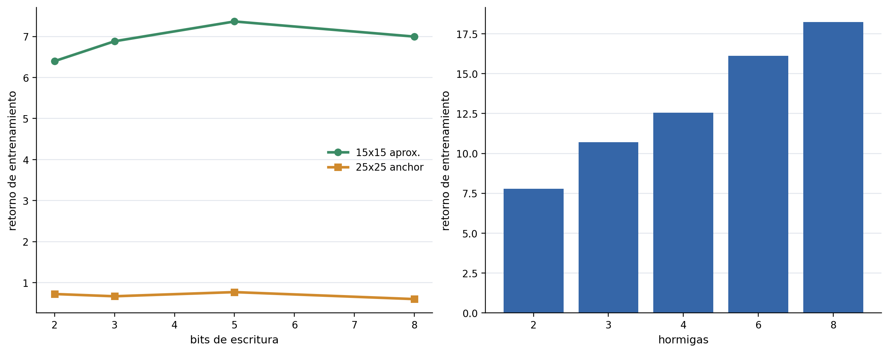
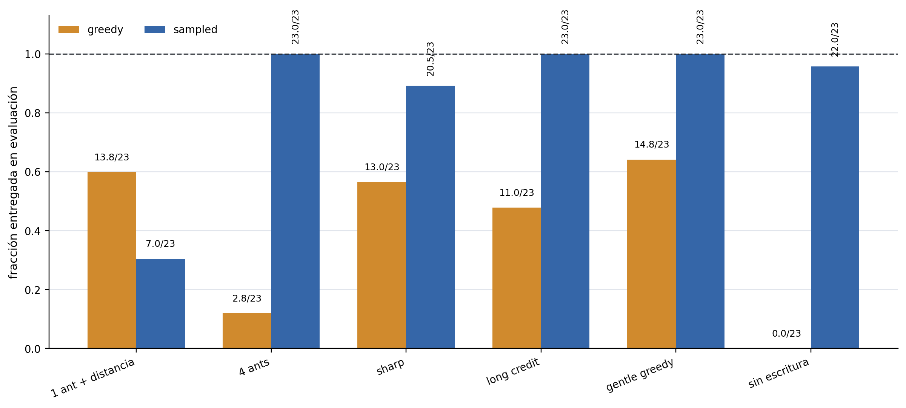
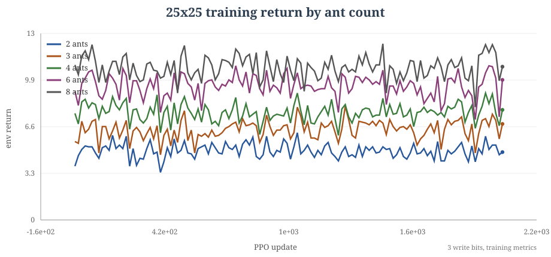
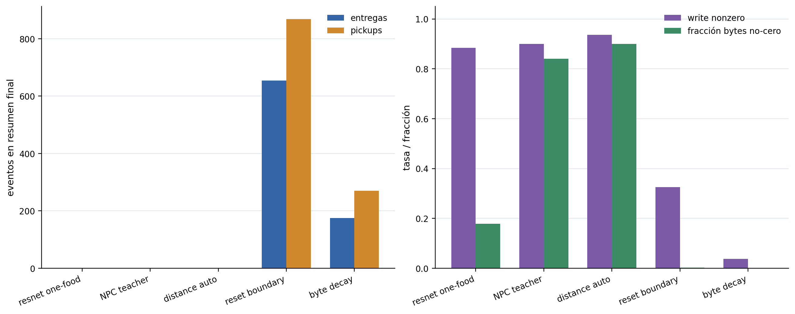
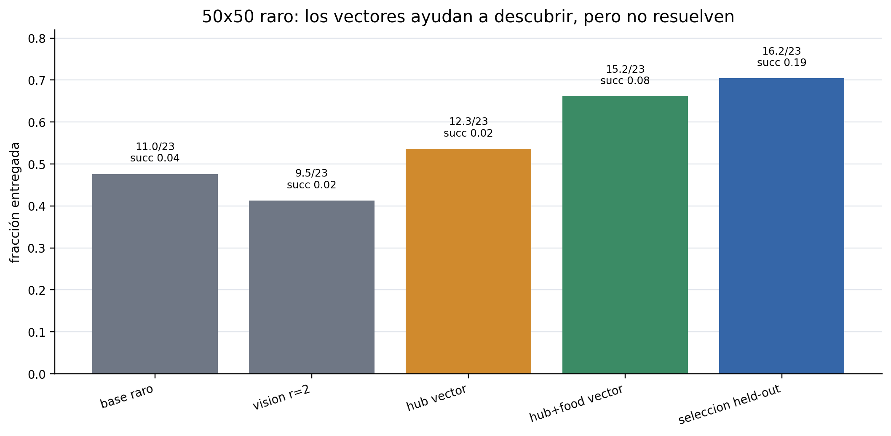
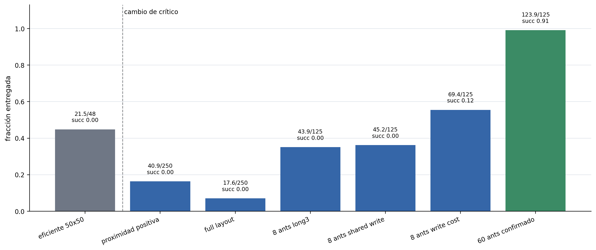

Qué investigamos
Cool Antz estudia cómo aparece el forrajeo cooperativo en una colonia de políticas locales. Cada hormiga ve solo una pequeña ventana de la grilla, decide cómo moverse y puede escribir un valor discreto en la celda que visita. El objetivo no es tocar comida una vez: la comida se debe encontrar, levantar, llevar al hormiguero y agotar mediante viajes repetidos.
La pregunta central fue práctica y causal: qué cambios hacen que la entrega sea confiable, cuáles solo producen actividad aparente, y en qué punto la grilla de bytes empieza a parecer memoria externa útil para la colonia.
En despliegue cada hormiga actúa con observaciones locales: comida cercana, otras hormigas, bytes, borde, hormiguero, estado de carga, orientación e identidad.
MAPPO entrena con información centralizada. Por eso la arquitectura del crítico no es un detalle: cambia el problema de asignación de crédito.
Como las hormigas no mueren, usamos supervivencia como tasa de éxito o completitud de la tarea, no como supervivencia biológica.
Cómo está ordenada la historia
El desarrollo no fue una subida lineal de mapas chicos a mapas grandes. Fue una serie de separaciones: primero definimos qué significa resolver el entorno, después aislamos el cuello de botella de cobertura, luego probamos qué cambió el comportamiento, registramos las ramas que no funcionaron, y recién al final miramos escalado con cuidado.
La política de 60 hormigas es el resultado entrenado más fuerte:
éxito 0.90625 y escritura no nula 0.998.
Las continuaciones seleccionadas escalan muy bien, aunque siguen dependiendo del punto guardado y la temperatura de despliegue.
El entrenamiento directo fue lento, inestable y falló parcialmente, pero reset-boundary recuperó entregas reales: 654 finales y 1003 en el mejor tramo.
Los videos grandes son despliegues de políticas ya entrenadas, no prueba de entrenamiento de punta a punta en 1000x1000.
Árbol de experimentos
Cada nodo se puede seleccionar y lleva a la sección correspondiente. Las imágenes son fotogramas reales de rollouts o, donde no existe un video específico, la figura auditada del experimento.
Mapa de lectura
Cada capítulo usa la misma plantilla: Objetivo / hipótesis, cambio respecto del baseline, métricas concretas, evidencia visual y lectura breve. Cuando una métrica no fue medida de forma honesta en ese experimento, lo decimos explícitamente.
El entorno: hormigas, comida y hormiguero
El primer experimento no es una mejora de entrenamiento, sino una definición del problema. La colonia debe cerrar ciclos de entrega: buscar comida, levantar una unidad, volver al hormiguero y repetir.
Objetivo / hipótesis
Fijar una tarea donde el puntaje principal sea comida entregada, no movimiento, bytes escritos ni comida encontrada una sola vez.
Cambio respecto del baseline
El baseline visual es una política aleatoria. Frente a eso, toda política entrenada debe producir ciclos fuente-hormiguero.
Qué medimos
Comida recolectada como entregas completas, tasa de éxito, eficiencia cuando existe comida por 1000 pasos-hormiga, y tiempo de convergencia solo cuando hay curva de entrenamiento.
Video / evidencia visual
El baseline aleatorio muestra movimiento sin entrega confiable. Es el punto de comparación visual para las políticas entrenadas.
Lectura de resultados
Un resultado como 23/23 significa que se entregaron
las 23 unidades, no que la colonia solo tocó comida. Esta
distinción evita sobreleer actividad superficial.
Los mapas chicos mostraron el cuello de botella
Antes de escalar, probamos si bastaba con aumentar la capacidad de comunicación. La respuesta inicial fue no: la cobertura de la colonia importó más que el alfabeto de bytes.

Objetivo / hipótesis
Probar si más bits de escritura bastaban para mejorar el forrajeo, o si el problema era primero de cobertura y crédito.
Cambio respecto del baseline
Se barrieron bits de comunicación de 2 a 8 y, por separado, la cantidad de hormigas en 25x25 con 3 bits.
Qué medimos
Retorno de entrenamiento. La comida entregada y la eficiencia no fueron la métrica final de este diagnóstico temprano.
Video / evidencia visual
La evidencia visual de esta etapa es la figura de barridos, no un rollout dedicado: compara bits contra cantidad de hormigas.
Lectura de resultados
Los bits se movieron poco, cerca de 0.31 a
0.44 en el ancla 25x25. El sweep de hormigas subió
de 4.8125 con 2 hormigas a 10.875 con
8. La primera mejora fuerte fue cobertura.
El desbloqueo 25x25: cobertura, shaping y despliegue estocástico
El primer éxito limpio aparece cuando la colonia tiene más agentes y el entrenamiento recibe una señal de distancia que ayuda a cerrar el ciclo de vuelta.

DISTANCE_CAP4
23/23 usa una evaluación separada con 6 fuentes.
Objetivo / hipótesis
Ver si distancia hacia el objetivo y más cobertura convertían el comportamiento disperso en entregas completas.
Cambio respecto del baseline
Se pasó de una hormiga a 4 hormigas, se usó distance shaping, y se comparó despliegue greedy contra muestreado.
Qué medimos
Comida entregada y tasa de éxito. Eficiencia por paso-hormiga no fue la métrica principal de esta tabla; el tiempo de convergencia se interpreta desde las curvas, no como número único.
Video / evidencia visual
La figura compara greedy contra muestreado, y el video fija el ancla visual de la familia 25x25 con 4 hormigas.
Lectura de resultados
DISTANCE_CAP4 llegó a 23/23 con éxito
1.0 en modo muestreado, pero no en greedy. Eso convierte al
modo de despliegue en un eje experimental real.
| Experimento | Configuración | Greedy | Sampled | Lectura |
|---|---|---|---|---|
DISTANCE_SHAPE |
25x25, 1 hormiga, 23 comida, 6 fuentes, 1 bit, radio 1, crítico MLP | 13.75/23, éxito 0 | 7/23, éxito 0 | El shaping ayuda, pero una hormiga sigue sin cubrir. |
DISTANCE_CAP4 |
25x25, 4 hormigas, 23 comida, 6 fuentes, 1 bit, radio 1 | 2.75/23, éxito 0 | 23/23, éxito 1.0 | Cobertura y despliegue estocástico destraban la tarea. |
DISTANCE_CAP4_NO_WRITE |
25x25, 4 hormigas, 23 comida, 6 fuentes, sin escritura | 0/23, éxito 0 | 22/23, éxito 0.5 | En 25x25, escribir no parece ser la causa principal del éxito muestreado. |
Los bytes pasaron a ser una hipótesis
La grilla de bytes existe y las políticas escriben. La pregunta es si esos bytes causan mejores decisiones o si solo registran actividad alrededor de una política que ya mejoró por cobertura.

Objetivo / hipótesis
Separar la mejora por más agentes de la mejora por un alfabeto de escritura más grande.
Cambio respecto del baseline
Una familia cambió bits de escritura; otra mantuvo 3 bits y aumentó la cantidad de hormigas.
Qué medimos
Retorno de entrenamiento por etapa y evidencia posterior de comida entregada en ablaciones. Supervivencia como éxito no fue medida de forma completa en todos los puntos.
Video / evidencia visual
La curva del currículo de hormigas y el rollout 25x25 muestran la rama donde cobertura produjo la señal más clara.
Lectura de resultados
La hipótesis de memoria por bytes queda abierta. Para volverla causal hacen falta ablaciones emparejadas: no-write, no-byte-read y byte-shuffle con costos comparables.
Autocurrículos: el progreso aparente no era suficiente
El proyecto probó currículos donde el entorno crecía o acercaba la dificultad en función del éxito. Fueron importantes porque mostraron una falla recurrente: una política puede activar etapas, acumular retorno moldeado o cargar comida sin cerrar el ciclo de entrega.

Objetivo / hipótesis
Probar si una única política podía aprender una familia de tareas cada vez más difíciles: primero con una grilla activa que crecía dentro de observaciones 50x50, y después con autocurrículo de distancia en 250x250.
Cambio respecto del baseline
En la versión 50x50, el contrato era 1 hormiga, 12 comidas, 2
fuentes, 1 bit, radio 1 y una grilla activa de 4x4 a 50x50. En
la versión 250x250, el contrato pasó a 500 hormigas, 5000
comidas, una fuente rica, 4 bits, radio 2 y crítico
set_cnn.
Qué medimos
Entregas, pickups, retorno del entorno, retorno moldeado, cantidad media de hormigas cargando, fracción de bytes no nulos y ventanas sin entrega. La eficiencia no fue la métrica central de estos diagnósticos.
Video / evidencia visual
La figura 250x250 muestra el error de lectura: mirar solo retorno o bytes no alcanza. Hay que mirar entregas y pickups como eventos de tarea.
Lectura de resultados
El autocurrículo 50x50 aumentó el tablero, no la competencia
transferible: el reporte archivado cae de 12.281
en 4x4 a 0.719 en 25x25 y 0.156 en
50x50. En 250x250, una corrida resumida tuvo
delivery_events=0, pickup_events=0,
env_return=0, episode_return=14.641,
4 etapas completadas hasta distancia 32,
mean_carrying_ants=447 y
final_mean_nonzero_byte_fraction=0.862. Otra
diagnosis mostró delivery_events=0,
pickup_events=0, shaping_return=26.25,
2 etapas hasta distancia 8 y fracción de bytes
0.899. La conclusión fue cambiar la medición y el
reset, no entrenar ciegamente más tiempo.
Laberinto: una rama de infraestructura, no una rama de resultado
También hubo una línea de laberintos. Es importante incluirla porque representa una decisión de diseño que no terminó como evidencia principal del informe.
Objetivo / hipótesis
Probar si las políticas locales podían sostener exploración y retorno en pasillos con obstáculos, donde la memoria externa podría ser más útil que en un mapa abierto.
Cambio respecto del baseline
La configuración preservada maze_exploration_curriculum.json
usa laberintos generados de 10x10 a 50x50, una hormiga, 48
comidas, 12 fuentes, 2 bits, radio 1, crítico MLP, pasillos de
ancho 3 y paredes de ancho 1. En la rama
origin/lethal_cookies, el cuaderno de laberinto define
una prueba de estrés 41x41 en L dentro de 50x50, pasillos de ancho 5,
20 hormigas y una fuente normal al final.
Qué medimos
Para el flujo preservado se verificó soporte de obstáculos, reinicios y renderizado. No hay métricas locales preservadas de comida recolectada, supervivencia, eficiencia o convergencia que permitan compararlo con las ramas principales.
Video / evidencia visual
El cuaderno de la rama lateral preparaba un render largo, pero
la llamada de entrenamiento estaba comentada y no hay archivo
multimedia final en runs/. Por eso esta sección usa un
esquema y no un video.
Lectura de resultados
El fallo fue de evidencia y foco experimental: la infraestructura de laberintos existió, pero no produjo una corrida comparable. La decisión razonable fue volver al forrajeo abierto, donde sí había métricas y videos auditables.
Memoria y autoresearch: más escritura no equivale a comunicación
La línea de memoria intentó separar uso causal de bytes de simple actividad visual. Esa distinción es clave para no vender como comunicación lo que solo puede ser exploración, saturación o retorno moldeado.
Objetivo / hipótesis
Demostrar que los bytes causaban mejores decisiones, no solo que aparecían pintados en la grilla.
Cambio respecto del baseline
Se agregaron pruebas normal,
no_byte_read y no_write, además de
recompensas como delivery_byte_trail_bonus,
byte_follow_bonus y variantes R8-R12 desde
puntos guardados fuertes.
Qué medimos
Entregas absolutas, brecha contra ablaciones, retorno, actividad
de escritura y desempeño de forrajeo. El criterio correcto era
doble: que normal superara las ablaciones y que la
tarea principal no se degradara.
Video / evidencia visual
Los videos de bytes son ilustrativos, pero no prueban causalidad. La evidencia decisiva debía ser la brecha cuantitativa contra ablaciones.
Lectura de resultados
El punto guardado sparse casi no dependía de bytes. R8 entregó bien
pero no por memoria: normal=394,
no_byte_read=397, no_write=397. R9
hizo más causal el uso de bytes pero dañó el forrajeo:
normal=124 contra ablaciones de 56.
R10 fue más liviano pero débil: 260 contra
248. R11 preservó conducta sparse sin ganancia
causal: 378 contra 395 y
395. R12 quedó interrumpido. La conclusión queda
abierta: hay memoria externa disponible, pero la causalidad de
comunicación no quedó demostrada.
50x50 raro: primero había que descubrir la fuente
Cuando la comida es escasa, la política puede saber volver y aun así fallar porque casi nunca encuentra la fuente.

Objetivo / hipótesis
Probar si ayudas de navegación mejoraban el descubrimiento de fuentes escasas.
Cambio respecto del baseline
Se agregaron señales vectoriales hacia el hormiguero y hacia la comida más cercana, junto con selección de puntos guardados.
Qué medimos
Comida entregada sobre 23 y tasa de éxito. No usamos eficiencia como métrica principal en esta comparación.
Video / evidencia visual
No hay video dedicado de este 50x50 raro; la figura auditada es la evidencia visual principal.
Lectura de resultados
El baseline raro entregó 10.958/23; el vector al
hormiguero llegó a 12.328/23; hormiguero más vector
a comida llegó a
15.203/23; selección held-out llegó a
16.198/23. La rama de radio de spawn intentó
continuar desde ahí con etapas spawn8,
spawn16 y spawn completo: las dos primeras etapas
terminaron con retornos de entrenamiento 5.898 y
7.209, pero la etapa final se detuvo en
130/500 actualizaciones. Ayudar a descubrir sí importó,
pero no resolvió el 50x50 raro.
El límite causal de 50x50 fue el crítico
La mejora grande de 50x50 no debe contarse como si solo hubieran cambiado las fuentes, los bits o la cantidad de hormigas. También cambió el crítico centralizado.

Objetivo / hipótesis
Ver si una función de valor espacial ayudaba a entrenar políticas locales en mapas más grandes.
Cambio respecto del baseline
La rama eficiente 50x50 usaba crítico MLP. La rama
proximity/full-layout pasó a strided_cnn y luego
agregó layout completo, shared writes, write cost, 8 bits y más
hormigas.
Qué medimos
Comida entregada, éxito y, en ramas posteriores, actividad de escritura. El tiempo de convergencia se lee de curvas y checkpoints, no como una constante.
Video / evidencia visual
La figura marca la frontera MLP versus strided_cnn;
los videos posteriores pertenecen a paquetes de intervención.
Lectura de resultados
MLP llegó a 21.5/48. La rama espacial con 8
hormigas y write cost llegó a 69.375/125. La rama
confirmada de 60 hormigas llegó a 123.90625/125.
El crítico espacial es una frontera causal de primer orden.
La frontera entrenada: 60 hormigas en 50x50
Este es el resultado de comportamiento más fuerte del sitio: una política local con 60 hormigas que casi vacía el entorno 50x50.
Objetivo / hipótesis
Probar si una colonia grande, con crítico espacial y continuidad seleccionada, podía cerrar la tarea 50x50 de media comida.
Cambio respecto del baseline
Se partió de la rama full-layout con strided_cnn y
se usaron 60 hormigas, 8 bits, identidades repetidas, optimizer
fresco, baja tasa de aprendizaje y temperatura de movimiento
seleccionada.
Qué medimos
Comida recolectada, éxito y tasa de escritura no nula. La eficiencia se evaluó en sweeps de temperatura, no como único criterio de selección de esta sección.
Video / evidencia visual
El despliegue 50x50 usa el punto guardado exportado real y muestra la política local de 60 hormigas casi vaciando la tarea.
Lectura de resultados
La confirmación de 64 episodios reporta
123.90625/125, éxito 0.90625 y
escritura no nula 0.998. Es un resultado fuerte,
pero no prueba por sí solo que los bytes causen la política:
muchas variables cambiaron juntas.
Escalado: separar entrenamiento, continuación y prueba de estrés
En mapas grandes hay tres historias distintas. Una política 50x50 muy fuerte se puede desplegar en visualizaciones grandes. Las continuaciones 100x100 muestran progreso seleccionado. El entrenamiento directo 250x250 fue lento, inestable y falló parcialmente, pero reset-boundary recuperó entrega.
100x100 puente: escalado por continuación seleccionada
Objetivo / hipótesis
Ver hasta dónde podía escalar una continuación seleccionada desde políticas ya competentes.
Cambio respecto del baseline
Se usaron ramas puente con 120 hormigas y selección de punto guardado/temperatura, no entrenamiento desde cero.
Qué medimos
Comida recolectada, éxito y eficiencia. La rama hard375 reporta
372/375 a 373/375, éxito
0.625 a 0.75, y una tasa de
0.803 entregas por 1000 pasos-hormiga.
Video / evidencia visual
La visualización 1000x1000 es solo actor y muestra el linaje 100x100; no es entrenamiento de punta a punta en 1000x1000.
Lectura de resultados
Es evidencia real de escalado, pero con una lectura precisa: continuación y selección ayudan mucho, y la temperatura de despliegue sigue siendo sensible.
250x250: fracaso útil y recuperación reset-boundary
Objetivo / hipótesis
Investigar por qué el entrenamiento directo de 250x250 con 500 hormigas y 5000 comida podía verse activo sin entregar comida.
Cambio respecto del baseline
La rama directa tenía horizontes largos, autocurrículo de
distancia y crítico set_cnn. Reset-boundary cambió
el contrato de reinicio/distancia para estabilizar entregas.
Qué medimos
Entregas, pickups, retorno moldeado, fracción de bytes no nulos
y ventanas sin entrega. En el eval fresco, la media fue
269.18 entregas y la tasa de ventanas con cero
entregas fue 0.0.
Video / evidencia visual
El video reset-boundary 250x250 y la figura diagnóstica separan entrega real, pickups, retorno moldeado y actividad de bytes.
Lectura de resultados
El fallo directo fue informativo: retorno moldeado y bytes podían
crecer sin entrega. Reset-boundary recuperó progreso real:
654 entregas finales y alrededor de
1003 en el mejor tramo de entrenamiento. Pero las
continuaciones siguieron siendo frágiles: byte-decay terminó con
175 entregas, y una evaluación larga d12 de la rama
no-decay mostró media 0.392, mediana
0 y pickup_to_delivery=0.008. El
intento estratificado d4/d8/d12 dejó manifiesto de lanzamiento,
pero métricas vacías por aborto operacional; no cuenta como
resultado experimental.
1000x1000 solo actor: prueba de estrés de la política 50x50
Objetivo / hipótesis
Ver si la política 50x50 aprendida producía comportamiento coherente cuando se la desplegaba en una escena mucho más grande.
Cambio respecto del baseline
No se entrenó de punta a punta en 1000x1000. Se reutilizó la política 50x50 estabilizada y se renderizó solo con el actor, con más hormigas y más comida.
Qué medimos
Primera entrega en el paso 14574 y
147 entregas al paso 120000. La
eficiencia se usa como diagnóstico de despliegue, no como afirmación
de entrenamiento 1000x1000.
Video / evidencia visual
El video muestra 500 hormigas y 5000 comidas en una grilla 1000x1000 usando solo el actor ya entrenado.
Lectura de resultados
Es una demostración visual fuerte de transferencia de comportamiento local, pero no reemplaza un experimento de entrenamiento en el entorno grande. La etiqueta correcta es prueba de estrés solo actor.
Sandbox interactivo: política real 50x50
Este sandbox usa los pesos exportados del actor del punto guardado entrenado para 50x50. Podés mover el hormiguero y las fuentes de comida, y correr la política en el navegador.
Checkpoint fuente:
runs/notebooks/fl50_60ants_half_food_sw_wc_8bits_stabilize_from_60best/checkpoints/best_full_layout_proximity_60ants_half_food_shared_writes_write_cost_8bits_stabilized.pkl.
Visor de artefactos
El visor cambia el video y la procedencia auditada. Cuando la tarea de evaluación y la geometría visualizada no coinciden, se muestran por separado.
Política frontera 50x50
Checkpoint 50x50 de 60 hormigas, renderizado desde la política real.
Transparencia de razonamiento
La página intenta mostrar qué evidencia sostiene cada afirmación, qué cambió junto con qué, y qué experimentos todavía faltan.
| Afirmación | Estado | Evidencia | Riesgo restante |
|---|---|---|---|
| 25x25 se resuelve bajo movimiento muestreado. | Fuerte | DISTANCE_CAP4: 23/23, éxito 1.0. |
El despliegue greedy sigue siendo mucho más débil. |
| La cobertura importó más que el conteo de bits al principio. | Fuerte para las corridas observadas | El retorno sube con más hormigas; el sweep de bits mueve poco. | Un factorial completo lo haría más limpio. |
| La frontera 50x50 pertenece a una rama de crítico espacial. | Fuerte | MLP y strided_cnn aparecen en ramas y resultados separados. |
Las mejoras posteriores combinan muchas intervenciones. |
| Los bytes causan las mejores políticas. | Abierto | Hay escritura y a veces saturación, pero no alcanza como prueba causal. | Faltan no-write, no-byte-read, byte-shuffle y costos emparejados. |
| Los autocurrículos resolvieron el escalado. | No demostrado | En 250x250 hubo retorno moldeado y muchas hormigas cargando con delivery_events=0. |
Los umbrales deben depender de entrega real, no solo retorno moldeado o avance de etapa. |
| El flujo de laberinto produjo un resultado comparable. | No | Hay implementación, tests y notebooks, pero no métricas locales preservadas ni MP4 final. | Debe citarse como rama exploratoria fallida, no como experimento exitoso. |
| 250x250 está resuelto en general. | Abierto | Reset-boundary recupera entregas reales, pero el entrenamiento directo fue inestable. | La tarea amplia sigue siendo diagnóstica. |
Cita estilo BibTeX
@misc{figo2026coolantz,
title = {Cool Antz: Multi-Agent Foraging With External Memory},
author = {Figueiredo Paschmann, Jeremías and Nattero, Francisco and Kaplan, Juan},
year = {2026},
note = {Reinforcement learning project report and local experiment chronology}
}